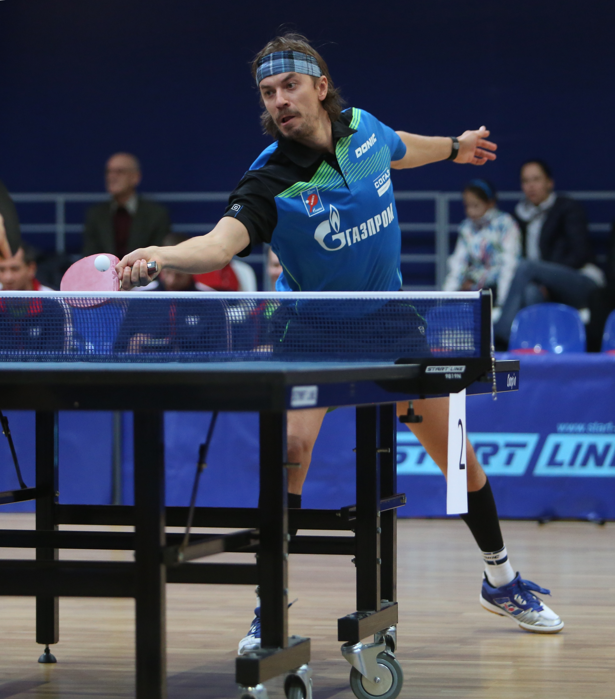

Выдающиеся игроки настольного тенниса России
Настольный теннис в России прославлен рядом выдающихся спортсменов, которые достигли мирового признания благодаря своей технике, настойчивости и стремлению к победам. Ниже приведены имена некоторых из них, чьи успехи навсегда останутся в истории этого спорта.
Фёдор Кузьмин
Фёдор Кузьмин — один из самых успешных российских игроков, чьи достижения включают титулы чемпионов Европы и мира. Он стал известен своим уникальным стилем игры и мощными ударами. Фёдор активно участвовал в Олимпийских играх, где боролся за медали с лучшими теннисистами планеты.
Кирилл Скачков

Кирилл Скачков — знаменитый российский теннисист, чьи достижения на международных турнирах включают несколько титулов чемпионов России и участие в Олимпийских играх. Кирилл известен своей атакующей игрой и отличной техникой подачи.
Полина Михайлова

Полина Михайлова — выдающаяся российская спортсменка, знаменитая своей техникой защиты и многолетними успехами в международных соревнованиях. Полина демонстрирует высокую стабильность в игре и стратегический подход к каждому матчу.
Эти спортсмены проделали долгий путь, который привел их к вершинам мирового настольного тенниса. Их достижения вдохновляют будущие поколения на успехи и стремление к совершенству в этом красивом и динамичном виде спорта.